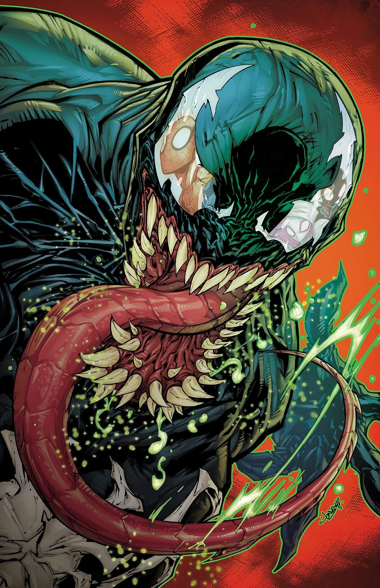
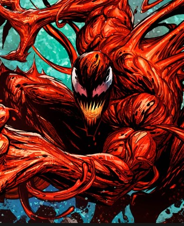
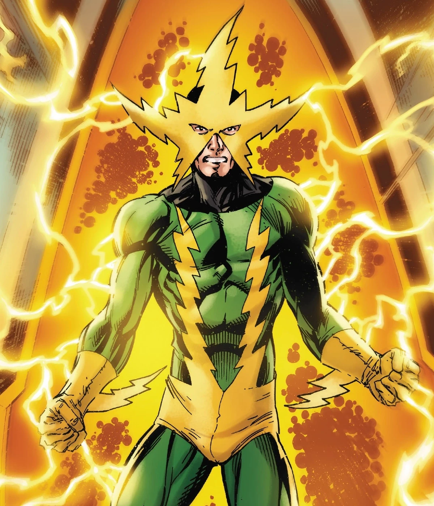
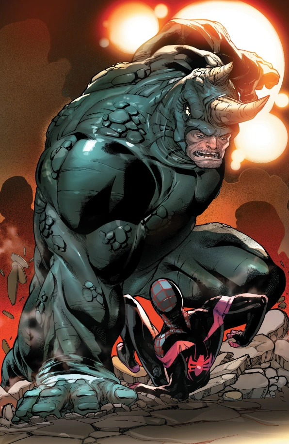
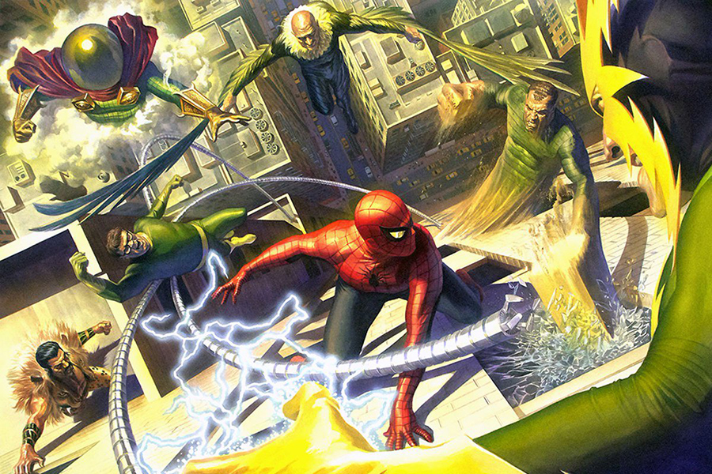
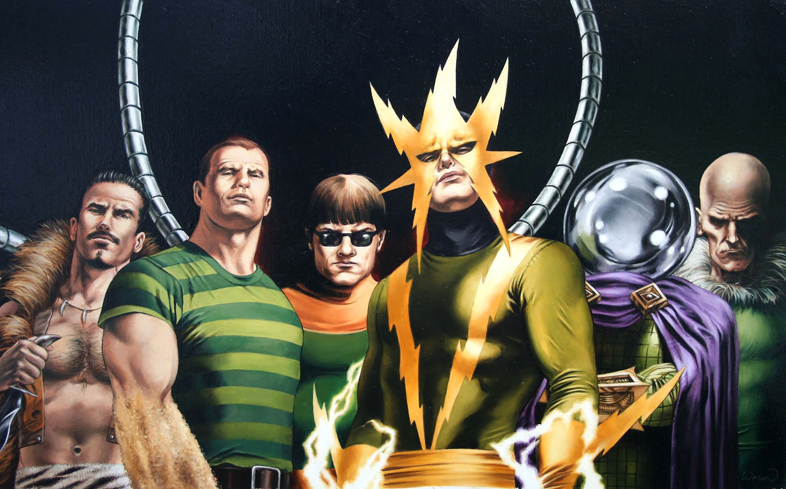
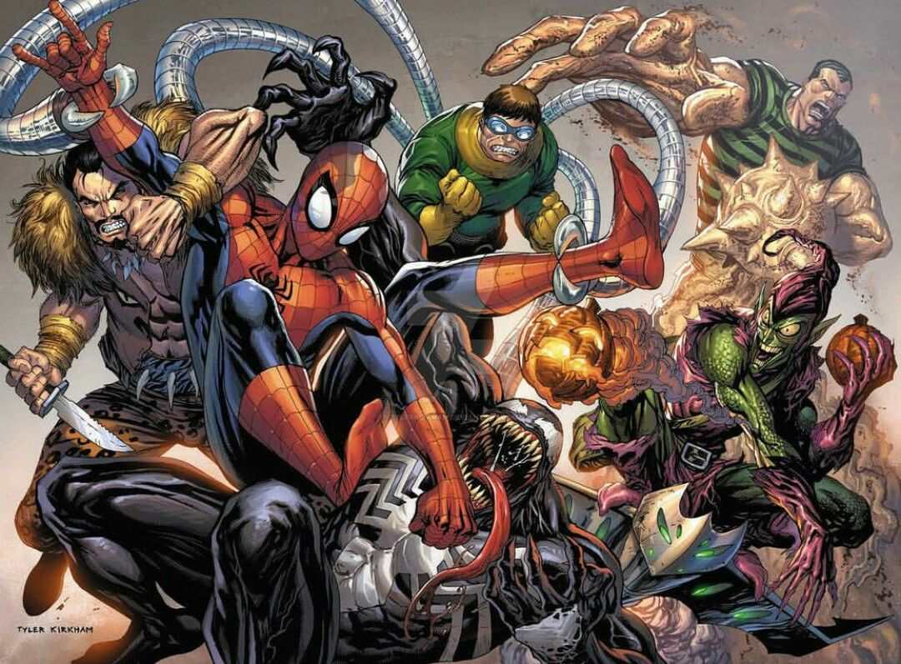
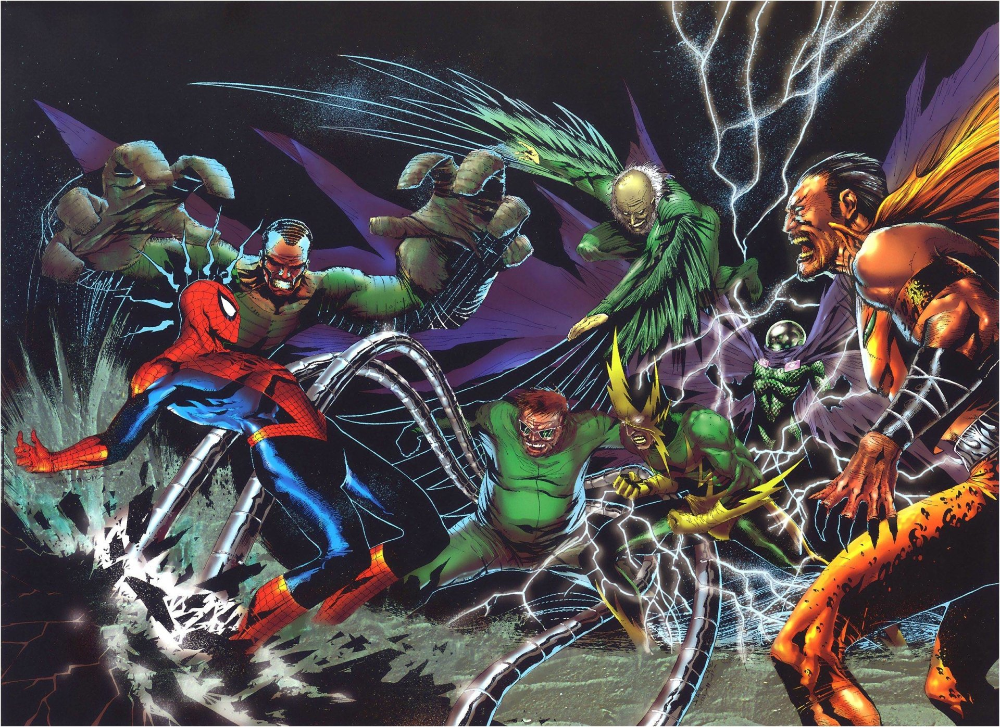

Norman Osborn nació en New Haven, Connecticut, como el hijo del rico industrial Amberson Osborn. Amberson, un brillante estudiante en los campos de la ciencia, se convirtió en alcohólico después de perder el control de su compañía de fabricación y su fortuna, y se volvió físicamente abusivo con su familia. Norman rápidamente llegó a despreciar a su padre, resolviendo ser un mejor sostén de la familia mientras desarrollaba tendencias homicidas tempranas como un medio de aliviar el estrés del abuso de su padre.
Algún tiempo después de que su padre perdiera su fortuna, Norman fue encerrado en el sótano de una de las casas de Amberson durante una noche tormentosa. Norman, naturalmente temeroso de la oscuridad, vio a una criatura duende verde merodeando en el sótano. La criatura era tan horrible que asustó a Norman al darse cuenta de que la oscuridad era mejor que la luz. Esto hizo a Norman más duro y más intrépido a lo largo de los años, sin saber que pronto se convertiría en el monstruo duende en sí mismo.
En la universidad, donde estudió química, administración de empresas e ingeniería eléctrica, Norman conoce a su novia de la universidad, Emiliy, que finalmente se casará y tendrá a su hijo Harold "Harry" Osborn. En su edad adulta, con la ayuda de su profesor universitario, Mendel Stromm, crea la empresa de tecnología de defensa Industrias Oscorp y se establece como CEO y presidente. La compañía tiene un gran éxito y Norman recupera la riqueza que había perdido durante su infancia. Sin embargo, su esposa Emily, se enferma y muere cuando Harry apenas tiene un año, el estrés que empuja a Norman a trabajar más duro, lo que lo lleva a descuidar emocionalmente a Harry.
Con la esperanza de obtener un mayor control de Industrias Oscorp, Osborn acusó a Stromm de malversación de fondos y arrestó a su socio y le vendió sus acciones de la compañía. Buscando las posesiones de su antiguo mentor, Norman descubre una fórmula experimental de mejora de la fuerza / inteligencia, pero al tratar de crear el suero, se vuelve verde y explota en su rostro. El accidente aumenta enormemente su inteligencia y habilidades físicas según lo previsto, pero también tiene el efecto secundario de llevarlo a la locura autodestructiva, al igual que su padre de hace años.
Norman adopta la identidad del Duende Verde con el objetivo de convertirse en el líder del crimen organizado en la ciudad, y tiene la intención de consolidar su posición al derrotar a Spider-Man. Actuando por su cuenta como el duende, o mediante el empleo de otros super-criminales como el líder, acosaría a Spider-Man muchas veces, pero no lograría su objetivo. Pronto, Stromm regresa de prisión, e intenta vengarse de Osborn usando un ejército de robots, pero Norman es salvado por Spider-Man, y Stromm aparentemente muere de un ataque al corazón.
Para descubrir la identidad secreta de su némesis, Osborn expone a Spider-Man a un gas que anula los sentidos del héroe arácnido. Esto le permite a Osborn acechar a Spider-Man hasta que se entera de que su némesis es Peter Parker, un estudiante universitario (y compañero de clase de su hijo). Mientras Parker se dedica a la vida civil, Osborn sorprende y golpea a Parker con una granada de asfixia, llevándose al joven a su base costera. Después de desenmascararse con Parker, este último lo incita a contar cómo se convirtió en el Duende, y usa el tiempo para liberarse. En la batalla subsiguiente, Spider-Man accidentalmente golpea a Osborn en una masa de cables eléctricos, borrando su memoria. Sintiendo pena por su némesis, y deseando evitar la vergüenza que le sobrevendría a la familia Osborn (especialmente Harry, el mejor amigo de Parker), Spider-Man destruye el disfraz de Duende en el incendio resultante y le dice a las autoridades que Osborn perdió su memoria mientras ayudaba a derrotar el Duende.
Pronto, Osborn está preocupado por los recuerdos reprimidos de Duende Verde y Spider-Man. Después de una presentación sobre supervillanos del NYPD, el Capitán George Stacy restaura la memoria de Osborn, experimenta un breve retorno a su personaje de Goblin. Si bien el secuestro de amigos de Parker y amenazando a la Tía May de Parker, que está expuesta a uno de sus propias "bombas psicodélicas", provocando una recaída de la amnesia.
Más tarde, Osborn se topa con un antiguo escondite de duendes verdes que, una vez más, restaura su memoria. Sin embargo, el impacto de ver a Harry hospitalizado, con una sobredosis de drogas, hace que la amnesia de Osborn vuelva una vez más. Después de la restauración final de sus recuerdos, el Duende secuestra y lleva a Gwen Stacy a un puente. Durante el intento de rescate de Spider-Man, Osborn golpea a Gwen fuera del puente, lo que resulta su muerte al caer. Spider-Man, traumatizado y obsesionado con la venganza, rastrea al Duende hasta su escondite, y en la batalla subsiguiente, Osborn es atravesado por su propio Duende Planeador.
Harry Osborn es testigo en secreto de esto. Queriendo proteger la identidad de su padre, él se quita el cuerpo del traje de Duende Verde de Norman Osborn para esconderse. Culpando a Spider-Man por el "asesinato" de su padre, Harry, enojado y desequilibrado mentalmente, jura venganza. Al haber heredado la compañía de su padre, Harry logra recuperar el negocio. Un día, para su sorpresa, encuentra un disfraz de Spider-Man en el departamento de Peter Parker y se da cuenta de que su mejor amigo es el hombre al que culpa por la muerte de su padre. Utilizando el equipo antiguo de su padre, Harry se enfrenta a Peter como el segundo Duende Verde
DOCTOR OCTOPUS
Otto nació en Schenectady, Nueva York, hijo de Torbert y Mary Octavius. Su educación fue menos que ideal, lo cual contrastaba con su núcleo familiar. Su padre, Torbet Octavius, era un obrero borracho que pagaba sus frustraciones con el joven Otto. Su madre, Mary Lavinia Octavius en cambio, era una madre sobreprotectora, preocupándose en exceso de su hijo. Con los años, Torbert murió en un accidente y Otto se dedicó aún más a sus estudios de la ciencia.
Se graduó y consiguió trabajo con una empresa de ingeniería, pronto se convirtió en un respetado físico nuclear y consultor de investigación, además de trabajar como inventor y profesor. Con el tiempo, Otto diseñó y construyó un arnés pectoral con cuatro tentáculos articulados de titanio para manipular elementos radioactivos, o cualquier otro material peligroso, a distancia. Por ese motivo se puso el apodo de Doctor Octopus. En aquel tiempo era idolatrado por su protegida, una científica especializada en realidad virtual llamada Carolyn Trainer.
Alrededor de este tiempo, se involucró con un colega investigadora, Mary Alice Anders, a quien finalmente le propuso matrimonio. Sin embargo, la feliz pareja fue interrumpida por la madre de Otto, que desaprobó a la joven novia por temor a quedarse sola. Otto interrumpió el compromiso a petición de su madre, pero murió poco después en medio de una discusión con su hijo. Después de haber perdido todos sus vínculos sociales, Otto se volvió más retraído, y creció obsesivamente dedicado a su trabajo.
La imprudencia con su seguridad personal lo llevo directamente a un accidente que cambiaría su vida para siempre. Una fuga de radiación en el laboratorio causó una explosión, que fusiono el arnés y las extremidades en su cuerpo. La radiación simultáneamente causó mutaciones en su cerebro, que le permitieron tener un control directo sobre los brazos a través de la telepatía. Enloquecido por el accidente y el daño que había causado a su cuerpo y mente, el Doctor Octopus dedicó su vida al crimen.
Debido a que el accidente lo trastornó, Octopus llegó a amenazar a la gente del hospital donde se encontraba tras su accidente. Hasta allí llegó Spider-Man, pero Octavius demostró ser superior, venciéndole rápida y fácilmente, siendo la primera derrota de joven héroe. Acto seguido, Octavius tomó una central nuclear, con la cual tendría a la ciudad de Nueva York a su merced. Spider-Man, recuperando la confianza en sí mismo tras su derrota, tuvo que volver a pelear contra Octavius, logrando derrotar al villano en esta ocasión.
Pero la derrota de Octopus no fue toda la satisfactoria que pudo llegar a ser. En prisión, Octopus aprendió a usar sus brazos extra con mayor precisión, volviéndose más mortífero. Aparte, entró en contacto con un gángster de Philladelphia, Blackie Gastón, el cual logró convencer a Octopus de que lo liberara a cambió de una fortuna. Así pues, Octopus salió de la cárcel por buen comportamiento, fue llevado por Betty Brant, secretaria de J. Jonah Jameson y novia de Peter Parker. Al parecer, Blackie tenía amenazado al hermano de Betty, Bennet, por unas deudas. Octopus liberó a Blackie, pero con la intención de quitarle su propia banda. Nuevamente intervino Spider-Man, el cual trataba de ayudar a su novia. Durante la pelea, Bennet falleció presa de unos disparos de Blackie, y aunque Blackie acabase detenido, Octopus termino fugándose.
Otto decidió pasar una temporada en Philladelphia, pensando que su rival Spider-Man estaría en la ciudad e iría a detenerle, pero al darse cuenta de que el héroe ya no estaba en la ciudad, Octavius decidió regresar a Nueva York a encontrarlo. Para localizar a Spider-Man, Octopus fue al Daily Bugle y secuestró a Betty, amenazándola con matarla a menos que Spider-Man fuese a su encuentro a pelear. Spider-Man rastreó a Octopus en una feria, donde Octopus derrotó a un Spider-Man enfermo de gripe. Octopus incluso desenmascaró a Spider-Man, pero al ser solo un joven, y después de apalizarle tan fácilmente, Octopus pensó que solo era un adolescente haciéndose pasar por Spider-Man.
Esto hizo que tanto Peter como Betty saliesen con vida del conflicto. Pero Octopus no se tomó muy bien que la prensa se burlase de el por pelear contra un adolescente corriente. Octopus entró en cólera y comenzó a provocar disturbios en la ciudad esperando que Spider-Man apareciese a detenerle. Spider-Man le hizo frente y la pelea acabó en un edificio en llamas, donde Octopus fue derrotado y nuevamente enviado a prisión.
VENOM
En el pasado lejano, Venom fue la generación 998a de un linaje de simbiontes nacidos en el planeta Klyntar, que eclosionó de un enjambre de huevos en una caverna. Criado para ser un agente del cosmos, su primer anfitrión, fue el habitante de un mundo helado, que mostró un alto grado de maldad y usó al joven simbionte para llevar a cabo un genocidio en contra de su planeta natal. Estos actos corrompieron al simbionte, convirtiéndolo en un ser cruel y lleno de odio, adicto a la rabia.
Tal comportamiento no fue bien visto entre los demás Klyntar, los cuales en lugar de dominar a sus anfitriones, deseaban vincularse con ellos y protegerlos. Como resultado de esto, la criatura fue encarcelada por sus hermanos, quienes lo consideraron una aberración y temían que contaminara la reserva genética. Esta prisión fue posteriormente incorporada inadvertidamente en la composición del Battleworld creado por el Beyonder.
Mientras estaba aprisionado en el Battleworld, el simbionte se unió con su primer huésped humano, Wade Wilson conocido como Deadpool, cuando este lo sacó de su módulo prisión y lo vistió luego de que su traje fuera destruido durante una batalla. Deadpool utilizó brevemente el traje, probando sus propiedades de transformación y lo deshecho rápidamente al darse cuenta que el traje estaba vivo y que podría dañarlo permanentemente al fusionarse con su retorcida mente.
Momentos después de que Deadpool regresará al simbionte a su prisión, uno de los principales soldados que participó en las Secret Wars, Spider-Man, se encontró con el módulo que aprisionaba a este ser y al abrirlo la criatura se adhirió a él en forma de nuevo traje.[1] Con su nueva vestimenta, Spider-Man tenía más fuerza y agilidad, pero su moral iba descendiendo hasta un nivel casi incontrolable, por lo que decidió prescindir del traje contando para ello con la ayuda de Fantastic Four.
Éstos, sin embargo, fueron incapaces de controlarlo y terminó por escapar y refugiarse en una Iglesia de nombre “Our Lady of Saints”, donde permaneció escondido entre las sombras. Allí estuvo hasta que un día apareció Eddie Brock. Eddie era un periodista cuya reputación había caído en picada. Las versiones sobre el origen de su desdicha difieren entre si es Peter Parker o el propio Spider-Man el responsable. En todo caso, Eddie, que estaba dispuesto a suicidarse, fue antes de hacerlo a la iglesia para rezar por su alma.
El simbionte se interesó por un ser de conciencia tan ambigua y se fusionó como había hecho con Spider-Man, sólo que seguiría conservando el mismo aspecto oscuro con una araña blanca en el centro, aunque mucho más musculado y con colmillos en toda la boca. Desde entonces se hizo llamar Venom.
Al cabo de muchos años, Venom sería expulsado del cuerpo de Eddie, quien contraería cáncer por su larga exposición al simbionte, pasando así por varios huéspedes conocidos como Angelo Fortunato, Mac Gargan, Flash Thompson, e incluso muchos héroes.

CARNAGE
Después de una batalla con Styx donde Venom fue dado por muerto, su anterior anfitrión Eddie Brock fue encarcelado en una prisión para seres humanos "normales". Su compañero de celda era Cletus Kasady, un asesino psicótico que pagaba once cadenas perpetuas. Sin embargo, el simbionte no estaba muerto, sino incapacitado temporalmente. Con el tiempo se re-unió con Eddie y ambos escaparon de prisión. Pero, tras la huida la criatura dejo atrás su engendro el cual tomo a Kasady como su anfitrión y se transformó en Carnage.
Durante un período de meses Carnage comenzó una serie de homicidios espantosos y aparentemente al azar. En la escena de cada crimen, él escribía “Carnage Rules”. Eventualmente Spider-Man lo encontró, aunque el trepamuros no fue rival para el poder de Carnage. Desesperado, Spider-Man, a su pesar, hace la primera de las muchas treguas que tendrá con Venom para luchar contra Carnage. Después de alistar la ayuda de Venom, Spider-Man utilizo ruidos fuertes en un intento de derrotar a ambos, padre e hijo.
El simbionte ha sido "asesinado" al menos dos veces. La primera vez fue cuando lucho con Venom y Spider-Man y más adelante cuando Venom, en un intento de poner fin a la amenaza de Carnage de una vez por todas, se comió su propio engendro. Sin embargo, las dos veces han sido reemplazados. Él encontró una copia de su traje en la Zona Negativa y en el Arco "Maximum Carnage" se revela que durante su primera pelea con Venom y Spider-Man el simbionte realizó un corte en Kasady para alterar su metabolismo a fin de crear una copia perfecta de sí mismo. Esto significaría que Kasady no ha llevado el original por un largo periodo, pero, cuando da a luz a su hijo Toxin; Venom afirmó que el engendro era su nieto. Lo que indicaría que Kasady ha estado usando el original todo el tiempo.
El simbionte posee un vínculo mucho más fuerte con Kasady en comparación con el que su padre tiene con sus anfitriones. Esto se indica por el hecho de que Kasady ha utilizado predominantemente el término "Yo", opuesto a la frase de su progenitor de "Nosotros". Aunque, a pesar de que el vínculo entre el huésped y simbionte es fuerte, ha dejado varias veces a Kasady para encontrar anfitriones más poderosos. Se ha unido con John Jameson, Spider-Man (en el momento conocido como Spider-Carnage) y Silver Surfer (Carnage Cósmico) pero siempre terminó de vuelta con Kasady. Eventualmente el simbionte y Kasady llegaron a su fin, mientras escapaban de La Balsa, una prisión para las personas con superpoderes. Fue destrozado por Sentry quien estaba encarcelado por su propia cuenta, lo llevó volando a la atmósfera y mató a Carnage partiéndolo por a la mitad. El simbionte sobrevivió al mantenerse durmiente y regresó a la Tierra, pero fue encontrado por Michael Hall, que utilizó el simbionte para crear prótesis ortopédicas y armaduras para sus guardias de seguridad.

ELECTRO

Maxwell Dillon nació en Endicott, Nueva York, hijo de Jonathan y Anita Dillon. Su padre era un contador que tenía dificultades en mantener un trabajo. Debido a esto, Maxwell y su familia se mudaban constantemente lo cual también causó que Maxwell se convirtiera en un niño solitario al ver lo difícil que era para él hacer nuevos amigos porque su familia no permanecía en un solo lugar por mucho tiempo. El padre de Maxwell eventualmente abandonó a la familia, y la madre de Maxwell comenzó a ser sobreprotectora sobre él a medida que crecía hacia su edad adulta. Esperando encontrar una cierta independencia dentro de su vida, Maxwell quería ir a la universidad, pero su madre no estaría de acuerdo con la elección de Maxwell, pero le sugirió que se consiguiese un trabajo como instalador de líneas eléctricas. A la edad de veinticuatro años, su madre murió y Maxwell persiguió sus metas y más tarde se convirtió en uno de los trabajadores más notables en su rama.
Luego Maxwell se casó con la mujer conocida como Norma Lynn, quien finalmente lo abandono cuando este se decidió a perseguir su carrera como instalador de líneas en lugar de asumir las responsabilidades como esposo. Desarrollando una personalidad que era a la vez egoísta y arrogante, otros tenían problemas para solicitar servicios o favores de Maxwell sin él exigiendo algo a cambio. Cuando un colega suyo quedó inconsciente y atrapado en un poste de gran altura con peligrosos cables de alto voltaje sueltos, Maxwell fue solicitado por su empleador para salvar la vida de su compañero. Salvando fácilmente al técnico inconsciente y llevándolo a un lugar seguro, Dillon fue impactado por un rayo, electrocutándolo, y casi matándolo. Sin embargo, Maxwell descubrió más tarde que obtuvo algún tipo de poderes eléctricos.
Maxwell al descubrir estos nuevos poderes, trato de aumentarlos. Esto causó que Dillon encontrara materiales caros que fueron robados de Industrias Stark y pidió prestado dinero para pagar la maquinaria que le ayudaría en sus objetivos. Fue durante este tiempo que Maxwell llamó la atención del mutante terrorista Magneto, quien le ofreció a Maxwell una posición dentro de su Hermandad de Mutantes Malvados, la cual Dillon rechazó. Entonces Maxwell fue confrontado por uno de los hombres a los que pidió dinero prestado. Amenazando con matar a Maxwell por no pagar la cantidad que le debía, Dillon respondió a la amenaza con un mortal rayo, cometiendo así su primer asesinato. Después de este incidente, Maxwell tenía sueños de utilizar sus poderes para satisfacer sus necesidades egoístas y decidió hacer una carrera criminal y se convirtió en el villano conocido como Electro.
Electro comenzó su carrera criminal victimizando a John J. Jameson al atacarlo a plena luz del día. Debido a este acto, Jameson hizo una audaz afirmación de que su némesis Spider-Man y Electro eran el mismo hombre por la forma en que Electro desplegó sus poderes que fueron de alguna forma comparados con los del propio Spider-Man. Fue a causa de esta afirmación en las páginas del periódico Daily Bugle que Spider-Man decidió probar que la teoría de Jameson estaba equivocada y vencer esta nueva amenaza al mismo tiempo. Después de localizar a Electro, Spider-Man se encontró inadvertido de la extensión de los poderes de Dillon y debido a esto, casi le cuesta la vida. La segunda vez que Spider-Man intentó derribar a Electro, el héroe vino preparado al usar guantes de protección para así lograr tocar a Electro sin recibir otro golpe mortal. Spider-Man eventualmente derrotó a Electro utilizando una manguera cercana que le dio una impactante derrota. Después de mostrar una prueba de que tanto Electro como Spider-Man no eran el mismo hombre, Electro fue enviado a prisión sólo para escapar tiempo después y convertirse en una gran amenaza para otro héroe.
Tras esto, Electro tuvo una pelea contra Daredevil. Electro se enteró de que los Cuatro Fantásticos iban a estar fuera de la ciudad unos días, por lo que decidió entrar en el Edificio Baxter y robarles notas científicas a las que vender a potencias extranjeras. Daredevil tuvo que derrotarle.
RHINO

El Rhino nació como Aleksei Sytsevich, un pobre inmigrante de Rusia, que estaba desesperado por pagar por el resto de su familia y vino a los Estados Unidos con la esperanza de encontrar trabajo para cubrir sus necesidades. Con poca educación y sin conocimientos reales, los únicos trabajos que podía obtener era usando su impresiónate fuerza y musculatura como un matón de diversas organizaciones criminales.
Un día se puso en contacto con algunos agentes del bloque Este, quienes le ofrecieron una gran suma de dinero por participar en un increíble experimento. Sytsevich aceptó, por lo cual fue sometido a un tratamiento químico y radiactivo intensivo, que unió un polímero súper fuerte a su piel y aumentó en gran medida su fuerza y velocidad. Se le dio el nombre clave de "Rhino", y fue enviado a trabajar como un super-asesino.
Su primera misión fue secuestrar a John Jameson, astronauta del programa norteamericano, para venderlo a otra nación. Al sentirse utilizado, Rhino se volvió contra sus benefactores y destruyó su cuartel general. Entonces, intentó raptar a Jameson por su cuenta. Spider-Man intervino y derrotó a Rhino, que fue internado en un hospital especial manteniéndolo fuertemente sedado. Unas semanas más tarde, Rhino escapó e intentó vengarse de Spider-Man, pero volvió a ser derrotado usando una versión especial de su fluido arácnido, preparada con la ayuda del Dr. Curt Connors, y que contenía pequeñas cápsulas de ácido que se disolvían con el aire. La red especial convertía en quebradizo el material del que estaba compuesta la piel artificial de Rhino.
Tras un periodo de reclusión le fue conmutada la sentencia, y Rhino fue nuevamente abordado por los espías que lo habían transformado. Estos le ofrecieron ser sometido a un tratamiento de rayos gamma y un nuevo traje. No teniendo ninguna otra perspectiva de empleo, Rhino aceptó la oferta. La nueva serie de tratamientos radioactivos tuvo éxito y dobló su fuerza. Su primera misión tras el cambio fue raptar al Dr. Bruce Banner, un experto en radiación gamma. Los espías pretendían obligar a Banner a crear un ejército de hombres tratados con rayos gamma. Cuando Rhino intentó raptar a Banner, éste se convirtió en Hulk y lo derrotó, siendo nuevamente sedado y encarcelado.
KRAVEN THE HUNTER
Sergui Kravinoff fue el hijo único de una pareja aristocratas rusos que emigraron al Reino Unido tras la revolución Rusa. Huérfano a corta edad Kravinoff, aprendió a sobrevivir gracias a su inteligencia y recursos. En su adolescencia viajó mucho de polizón en trenes y barcos de carga y vivió cierto tiempo en gran parte de todas las grandes ciudades Europeas y Asiáticas. En cierto momento encontró trabajo en un safari por África Ecuatorial, descubriendo así su talento innato para la caza y no tardó en establecerse en la sabana africana.
Cuando se convirtió en adulto ya había conseguido una elevada fortuna como cazador. Siguió una década más viviendo en África durante la cual conoció a cierto doctor en el Congo Belga que tenía una poción de hierbas que multiplicaba las habilidades físicas. Kraven las robó y las utilizó sobre sí mismo. Se convirtió en socio del hombre que más tarde sería conocido como el Camaleón.
Kraven, que había cazado a los animales mas mortíferos de la Tierra, ansiaba nuevos retos. El Camaleón le sugirió que cazara a su enemigo Spider-Man, pero no lo logró y fue derrotado por Peter Parker y deportado del país. Volvió nuevamente aliándose con otros cinco enemigos de Spider-Man para poder derrotarle formando los Seis Siniestros, pero otra vez fue vencido. Dos combates más supusieron dos nuevas derrotas.
Finalmente Kraven decidió buscar un nuevo reto en La Tierra Salvaje, cazar a Zabú, el último de los tigres dientes de sable, aunque lo capturó Ka-zar consiguió liberarle en Nueva York. Al poco tiempo, volvió a la Tierra Salvaje en busca de venganza y con ayuda de Gog, un extraterrestre engañado por Kraven, combatió a Ka-Zar y Spider-Man, siendo derrotado.
Posteriormente luchó contra Tigra, quien lo venció. Recuperado del combate aceptó un contrato para matar a un estudiante de la Universidad Empire State aliándose junto a Tarantula. Fue nuevamente derrotado por Spider-Man. Después decidió vengarse de Tigra por su anterior derrota y Spider-Man como siempre frustro sus planes.
Entonces se retiro al caribe para replantearse su vida y sus metas. Llegó a la conclusión de que en sus muchas peleas con Spider-Man había perdido su sentido del honor y que eso había provocado sus múltiples derrotas. Dispuesto a salvar su reputación y honor, regresó a Norteamerica para llevar bestias salvajes a un zoológico pero durante su estancia, Calypso, su compañera, le impulsó a luchar contra Spider-Man creyendo que esa victoria le devolvería su sentido de grandeza. Volvió a ser derrotado.
Meses más tarde, de nuevo Calypso lo convenció para que intentase capturar una vez más a Spider-Man. En medio de la batalla Calypso envenenó al trepamuros, pero al darse cuenta, Kraven ayudó a su archienemigo para evitar que se hiciera daño a sí mismo. Kraven decidió abandonar a Calypso por no comprender lo que el consideraba un digno intento de recuperar su honor.
Cansado de tantas derrotas planeó su última y definitiva venganza. Secuestró a Spider-Man y lo mantuvo enterrado vivo durante dos semanas alentando el odio y el miedo de la criatura conocida como Alimaña hacia Spider-Man. Tras salir victorioso en sus planes, expulsando todos sus fantasmas interiores se suicidó.
THE VULTURE
Adrian Toomes era un gran ingeniero electrónico, que en compañía de otro socio llamado Gregory Bestman fundó la empresa B+T Electronics. Gregory se encargaba de la parte administrativo-comercial y Toomes de la investigación. Tiempo después, Adrian trabajaba sobre un modelo de arnés electromagnético, que permitiera el vuelo a su portador, cuando se presentó en el despacho de su socio para comentarle el éxito de sus investigaciones y éste no se hallaba allí. Aprovechando la ausencia, Adrian revisó los papeles, y descubrió con gran sorpresa que Bestman le había estado estafando con los beneficios de la empresa. Cuando Gregory apareció, Toomes lleno de rabia lo zarandeó e incluso lo levantó en el aire, hecho que desconcertó a ambos debido a la edad y constitución de Adrian. Estupefacto por su fuerza se marchó, ocasión que utilizó Bestman para expulsarlo de la empresa, ya que debido a la inocencia de Toomes, había firmado unas cláusulas en las que dejaba todo a Gregory en el momento de la constitución de la sociedad.
Adrian reunió todos sus ahorros y se retiró a un asilo abandonado en Staten Island, aunque no dejó de trabajar en su arnés y logró construir un modelo portátil con alas que le capacitaba para volar, ademas de darle una fuerza y agilidad enormes. Sin Toomes, la empresa no funcionaba y Bestman se vio obligado a cerrar y subastar el material. Sin embargo, cuando Adrian se enteró, planeó su venganza y decidió ir a la planta a destruir todo y de este modo arruinar a su ex-socio. Entró también en el despacho con la intención de obtener documentación y poderla utilizar como prueba en contra de Gregory, pero en vez de eso, tomó el dinero de la caja fuerte y huyó. Toomes se percató de la facilidad con la que había llevado a cabo todo y ahí empezó su carrera criminal. Con su fuerza y capacidad de huida, nada parecía resistírsele.
Con su aspecto físico y las alas, Toomes asemejaba a un buitre, y así se dio a conocer. Vulture hizo aparición en Nueva York con pequeños robos gracias a su ágil y sigiloso vuelo. Pero esto parece que sólo le servía de entrenamiento y, seguro de sus facultades, decidió dar un golpe más grande, uno que asombrara a toda la opinión pública. Adrian vio su gran oportunidad cuando se enteró de que una joyería de Park Avenue iba a trasladar un millón de dólares en joyas a una nueva sucursal al otro lado de la ciudad. Para dar más emoción, y de este modo alimentar su ego, distribuyó unas notas avisando a la editorial de Jonah Jameson, a una emisora de radio, y al jefe de la policía.
Pero justo cuando regresaba a su cubil, se percató de que Spider-Man le estaba espiando (en realidad, simplemente le estaba haciendo fotos para luego venderlas a Jameson). Vulture tomo a Spider-Man desprevenido y le noqueó fácilmente. Llegado el día del traslado, y con la policía llenando las calles y los cielos con helicópteros, Vulture ataca por donde menos se le espera, por las alcantarillas, y se hace con el botín. Tras una larga persecución, Spider-Man logró darle alcance y detenerlo, gracias a un ingenio de su invención, un inversor antimagnético que logró bloquear su arnés.
Durante su estancia en prisión, se ganó la confianza del alcaide, y así pudo construir un mecanismo volador que, aunque rudimentario, le permitió escapar. En el inevitable encuentro posterior con Spider-Man tras el atraco a una joyería, el trepamuros se vio sorprendido, ya que Vulture había modificado el mecanismo de su traje (ademas de prescindir de su cola) y el inversor antimagnético que dio resultado antes, ahora no servía, y el cabeza de red acabó con el brazo lastimado. El siguiente objetivo de Toomes fue el Daily Bugle, al que se dirigió para robar el dinero destinado a las nóminas de los empleados. Allí le hizo frente Spider-Man, que aun teniendo el brazo derecho en cabestrillo, logró detenerlo de nuevo.
Toomes, como siempre, fue previsor, y gracias a un par de alas preprogramadas, que acudieron en su búsqueda cuando estaba en el patio de la cárcel, pudo fugarse. Spider-Man fue a su encuentro en cuanto lo supo y durante una pequeña refriega, Vulture escapó, no sin antes lanzarle un nuevo desafío, robaría un acelerador atómico experimental que transportaba el ejército y que pasaba por la ciudad al día siguiente. Pese a que Spider-Man advirtió a los militares, no le hicieron caso, y cuando él mismo se presentó en el convoy, fue capturado por los hombres del General Ross. Toomes aprovecho la distracción de los centinelas para robar el acelerador, pero Spider-Man se liberó y con gran destreza logró desbaratar los planes de Vulture, devolviendo el ingenio al ejército.
THE SINISTER SIX
The Sinister Six (Los Seis Siniestros) son un grupo de villanos que han tratado de matar a Spider-Man en muchas ocasiones. Este grupo fue fundado por Doctor Octopus después de ser derrotado por Spider-Man tres veces seguidas. A partir de esta unión, vinieron muchas otras, con diferentes líderes y miembros. Sin embargo, el mas conocido es el compuesto por: Doc Ock, Mysterio, Electro, Kraven el Cazador, Sandman y Vulture




Después de repetidas derrotas a manos de Spider-Man, el Doctor Octopus decidió reunir a un grupo de supervillanos que hubieran sufrido su mismo destino. De esta forma reunió a Mysterio, Electro, Kraven el Cazador, Sandman y Vulture. Sabiendo que no podía mantener a los cinco personajes juntos durante largo tiempo, trazó un plan para que Spider-Man se enfrentara a ellos individualmente uno tras otro. Para ello secuestró a Betty Brant y May Parker. Peter Parker, que recientemente había perdido sus poderes y había dejado el traje, se enteró del desafortunado desafío a través de J.J. Jameson. Aún sin poderes se presentó para hacer frente a Electro. De alguna forma la descarga eléctrica de su enemigo reactivó sus poderes y de ésta forma pudo vencer a sus enemigos.
Años más tarde, los Sinister Six volvieron a reunirse tras fugarse de prisión. Como Kraven se había suicidado, el Duende ocupó su lugar. En realidad, el Doctor Octopus había mentido a sus compañeros, ya que su último plan era la dominación del mundo. Sin que ellos lo supieran, Sandman se había reformado recientemente y ayudó a Spider-Man a derrotar a los villanos.
Más tarde, Doctor Octopus puso en marcha un maquiavélico plan para vengarse de Sandman y conseguir armas alienígenas. Haciendo creer que Octopus era el responsable del atentado explosivo contra la familia adoptiva de Sandman, éste reunió a los antiguos miembros de los Sinister Six para atacar a Octopus, sin saber que era eso precisamente lo que se pretendía. Octopus derrotó fácilmente a los miembros de los Sinister Six y cristalizó a Sandman con una de las armas que poseía en su poder. Tendida la trampa, los Sinister Six se unieron de nuevo al Doctor Octopus y empezaron una escalada de violencia intentando obtener armas más poderosas. Durante su campaña de terror se cruzaron con varios héroes que fueron derrotados, tales como Spider-Man, Hulk, Fantastic Four, Sonámbulo, Deathlok, Nova, Solo, Cyborg X y el Ghost Rider. Aunque con varias fracturas en su cuerpo, Spider-Man logró reunir a varios de los héroes derrotados con los que se enfrentó a los Sinister Six en una base de HYDRA cuando intentaban conseguir armas de destrucción masiva, pero finalmente fueron vencidos.
Cuando Kaine comenzó matando a los villanos de Spider-Man, incluyendo al fundador de los Sinister Six, Doctor Octopus, el Hobgoblin se dio cuenta de que sólo era cuestión de tiempo hasta que llegara a él por lo que reunió a un grupo de villanos para localizarlo y asesinarlo. Ellos tenían la ventaja al principio hasta que Spider-Man apareció para salvar a Kaine.
Todavía furioso por el anterior encuentro con Doctor Octopus, Sandman, que se había vuelto malvado gracias a una máquina del Wizard, reorganizó a los Sinister Six con Daniel Berkhart reemplazando al fallecido Quentin Beck como Mysterio. El grupo atacó al Doctor Octopus y al Senador Stewart Ward, pero fueron derrotados por los grandes poderes alienígenas del senador.
Aunque existieron otras versiones de los Siniestros como los Siete Siniestros o los Doce Siniestros, los seis no volvieron a actuar hasta la Guerra Civil, pero fueron detenidos por el Capitán América y sus Vengadores Secretos.
Posteriormente, como parte del último plan de Doc Ock, los Sinister Six derrotaron al grupo de genios supervillanos llamado la Intelligencia a quienes le robaron su Cañón Zero, una poderosa arma que cambia el campo gravitatorio de la Tierra para enviar objetos específicos hacia el espacio.
Luego, el Doctor Octopus, en su plan para ser recordado como el hombre que salvó a la Tierra, ofreció a las naciones del mundo la oportunidad de detener el efecto invernadero, usando un dispositivo especial conectado con diferentes satélites en la órbita terrestre.
Disfrazado como Al Gore, el Camaleón trató de acelerar la decisión de los líderes del mundo sobre el asunto, pero fue descubierto por Spider-Man, que irrumpió en la escena junto a los Vengadores. Cuando el Camaleón fue liberado, este viajo al Mediterráneo, para asistir a una reunión con el resto del equipo. Los Vengadores los siguieron y llegaron a su guarida, donde se batieron en combate contra los Sinister Six, pero todos fueron derrotados por los villanos, el precio de la batalla fue Electro, que fue vencido y enviado al espacio por Thor.
Haciendo uso de una explosión como distracción, Silver Sable salvó a Spider-Man y a la Viuda Negra. Tras esto, cuando trataron de llegar a una de las plantas de fabricación de satélites del Doctor Octopus, derrotaron a Sandman, pero Octavius pidió ayuda a todas las naciones, debido a su posición en el asunto, para capturar a Spider-Man.
Mientras Spider-Man y sus aliados continuaban desarmando las bases del Doc Ock, derrotando a Rhino en el proceso, fueron atacados por las fuerzas de S.H.I.E.L.D., por lo cual Spider-Man y compañía se vieron obligados a huir antes de que pudieran ser capturados. Ante este inconveniente, Octavius pidió la ayuda de otros supervillanos alrededor del mudo con el fin de velar por sus instalaciones restantes, pero incluso después de esto, Spider-Man logro seguir su pista y llegar a su ubicación. El Doctor Octopus revelo que iba a destruir el mundo de todos modos, en lugar de salvarlo y activo su lente Octaviano, dando la impresión de quemar la mitad del mundo, incluyendo el país de Silver Sable, Symkaria. Pero luego se revelo como un truco hecho por Mysterio, quien sólo quemo una pequeña porción de la ciudad en Symkaria, mientras Camaleón utilizo un robot para luchar contra Spider-Man. Tras ser derrotados, Mysterio es convencido por Spider-Man para ayudarle a atrapar al Doctor Octopus en su base en Guatemala, pero Octavius utiliza su as bajo la manga, que consistía en usar a los Vengadores controlados por su mente como sus nuevos Sinister Six.
Spider-Man, Sable y Viuda lograron derrotar a los Vengadores, por consiguiente Spidey y Sable fueron tras Octopus. En el camino se enfrentaron nuevamente a Rhino mientras la base submarina comenzó a inundarse, durante la pelea Rhino atrapo a Sable y dejo a Spider-Man con dos opciones, salvar a Sable de ahogarse pero a la vez permitiendo que Octavius activara sus satélites o dejar que él y Sable se ahogaran a fin de continuar para detener a Octavius. Spider-Man, por pedido de Sable la dejo a su suerte y lucho contra el Doctor Octopus, a quien logro detener de una vez por todas.
Dado que el grupo anterior se disolvió, un nuevo equipo tomo su lugar. Liderados por Boomerang, los nuevos Sinister Six originalmente se propusieron a crear un dispositivo de manipulación del clima, usando varias piezas de tecnología. No obstante su plan fue interrumpido por Superior Spider-Man, quien derrotó rápidamente al Living Brain antes de dejar la lucha por salvar la vida de un oficial de policía en la escena. Sin embargo, él había marcado al resto del grupo con nano rastreadores arácnidos, lo que le permitió escuchar sus conversaciones y saber a dónde se dirigían. En el transcurso de un par de horas, Otto estableció formas para desarmar al resto de los Sinister Six cuando irrumpieron en Horizon Labs y fueron derrotados rápidamente.
Boomerang manipulo entonces al resto del equipo, menos al Living Brain, en la recuperación de la cabeza de Silvio Manfredi del Owl. Boomerang había sido coaccionado por el Camaleón, quien creía que la cabeza del líder Maggia le daría poder político en el bajo mundo criminal. Los otros miembros de los Sinister Six despojaron a Boomerang de su posición de liderazgo, dando este cargo al nuevo Escarabajo. Posteriormente Boomerang señalo anónimamente a Luke Cage y Puño de Hierro sobre el paradero del equipo, y el dúo venció fácilmente a los villanos. Boomerang después libero al grupo mientras estaban de camino a la cárcel, reafirmando así su papel de liderazgo.
Una nueva encarnación de los Sinister Six apareció, denominándose a sí mismos como los "All-New Sinister Six", que constaba de 8-Ball, Delilah, Killer Shrike, Melter, Squid, con Swarm como líder. Esta encarnación lucho contra Spider-Man y los estudiantes de la Escuela Jean Grey, pero el enfrentamiento terminó con Swarn siendo derrotado por Hellion, haciendo que el resto de los Sinister Six se rindieran.